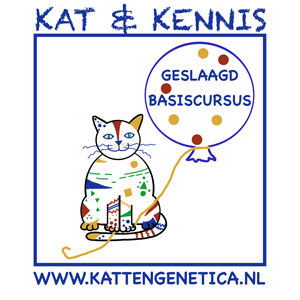

Een goede gezondheid staat bij ons voorop. Onze katten worden daarom uitgebreid getest: op erfelijke aandoeningen zoals HCM (vanaf één jaar oud) en PKD, en op overdraagbare ziekten zoals FIV en FeLV, alvorens zij een nestje krijgen. Ook zijn al onze katten volledig gevaccineerd tegen kattenziekte en niesziekte.
Good health comes first for us. That's why our cats are thoroughly tested — for hereditary conditions such as HCM (from one year of age) and PKD, and for transmissible diseases such as FIV and FeLV — before they have a litter. All our cats are also fully vaccinated against feline panleukopenia and cat flu.
Dit helpt ons om zo verantwoord mogelijk te fokken, maar geeft helaas nooit een absolute garantie: het blijft mogelijk dat een kat later in haar leven alsnog een aandoening ontwikkelt. Door onze ouderdieren zo grondig mogelijk te laten testen, doen we in elk geval alles wat in onze macht ligt om onze kittens zo gezond mogelijk op de wereld te zetten.
This helps us breed as responsibly as possible, but unfortunately it can never offer an absolute guarantee: a cat may still develop a condition later in life. By having our breeding cats tested as thoroughly as possible, we do everything within our power to give our kittens the healthiest possible start in life.
HCM is een erfelijke hartaandoening waarbij de hartspier steeds verder verdikt, waardoor het hart minder goed in staat is om bloed rond te pompen. In het begin zijn er vaak weinig tot geen klachten te merken. Een dierenarts hoort soms een bijgeruis of een onregelmatig hartritme, maar dat is niet altijd het geval — juist daardoor blijft de ziekte lang onopgemerkt. In ernstige gevallen kan HCM leiden tot plotseling overlijden.
HCM is a hereditary heart condition in which the heart muscle gradually thickens, making it less able to pump blood around the body. In the early stages there are often few or no noticeable symptoms. A vet may sometimes hear a heart murmur or an irregular rhythm, but not always — which is exactly why the disease can go unnoticed for a long time. In severe cases, HCM can lead to sudden death.
Bij de Britse Korthaar is een hartecho op dit moment de enige betrouwbare manier om HCM aan te tonen of uit te sluiten; een nauwkeurige DNA-test bestaat er voor dit ras (nog) niet. Wij laten onze katten daarom regelmatig controleren en fokken alleen met dieren die vrij zijn van HCM. Omdat de ziekte zich soms pas op latere leeftijd openbaart — tot ongeveer zeven jaar — blijft een hartecho belangrijk, ook bij katten die al eerder goedgekeurd zijn. Een goede uitslag is dus geen garantie voor de rest van het leven, maar wel de beste manier om het risico zo klein mogelijk te houden.
For the British Shorthair, a heart ultrasound is currently the only reliable way to detect or rule out HCM; an accurate DNA test doesn't (yet) exist for this breed. We therefore have our cats checked regularly and only breed with animals that are clear of HCM. Because the disease can sometimes only appear later in life — up to around seven years of age — a heart ultrasound remains important even for cats that have previously passed. A good result is therefore not a lifetime guarantee, but it is the best way to keep the risk as low as possible.
PKD is een erfelijke nieraandoening waarbij zich in de nieren met vocht gevulde cysten ontwikkelen. Deze cysten groeien geleidelijk en verdringen daarbij steeds meer gezond nierweefsel, waardoor de nierfunctie langzaam achteruitgaat. Ook hier zijn er in het begin meestal geen duidelijke symptomen; pas in een verder gevorderd stadium kan PKD tot ernstig nierfalen leiden.
PKD is a hereditary kidney condition in which fluid-filled cysts develop in the kidneys. These cysts gradually grow and crowd out healthy kidney tissue, causing kidney function to decline slowly. Here too there are usually no clear symptoms in the early stages; only in a more advanced stage can PKD lead to serious kidney failure.
Voor de Britse Korthaar bestaat er, anders dan bij HCM, wel een betrouwbare DNA-test waarmee PKD met zekerheid kan worden uitgesloten. Daarnaast kan een echografie helpen om eventuele cysten vroegtijdig op te sporen. Wij laten onze katten testen en fokken uitsluitend met dieren die aantoonbaar PKD-vrij zijn.
Unlike with HCM, a reliable DNA test does exist for British Shorthairs that can rule out PKD with certainty. An ultrasound can also help detect any cysts at an early stage. We have our cats tested and only breed with animals that are demonstrably PKD-free.
FIV, ook wel kattenaids genoemd, tast het afweersysteem van de kat aan. Besmetting gebeurt meestal via vecht- of bijtwonden, maar kan ook plaatsvinden tijdens de dracht of via de moedermelk. In het begin zijn er meestal geen duidelijke symptomen; klachten ontstaan gemiddeld pas drie tot vijf jaar na de besmetting. De kat wordt dan gevoeliger voor infecties door virussen, bacteriën, parasieten en schimmels, waardoor zelfs een op zich onschuldige infectie ernstige gevolgen kan krijgen.
FIV, also known as feline AIDS, attacks a cat's immune system. Infection usually occurs through fight or bite wounds, but can also happen during pregnancy or via mother's milk. In the early stages there are usually no clear symptoms; problems typically only appear three to five years after infection. The cat then becomes more susceptible to infections from viruses, bacteria, parasites and fungi, meaning even an otherwise harmless infection can have serious consequences.
Er bestaat geen genezende behandeling voor FIV en ook geen vaccin. Wel kunnen FIV-positieve katten ondersteunende zorg krijgen om secundaire infecties beter te kunnen bestrijden. De enige manier om besmetting te voorkomen is contact met besmette katten vermijden — vrij buiten lopende katten lopen hierdoor een duidelijk hoger risico. Door onze ouderdieren te testen, weten we zeker dat zij het virus niet bij zich dragen en dus ook niet aan hun kittens kunnen doorgeven.
There is no cure for FIV and no vaccine either. FIV-positive cats can receive supportive care to help them fight off secondary infections. The only way to prevent infection is to avoid contact with infected cats — cats that roam freely outdoors are therefore at a clearly higher risk. By testing our breeding cats, we make sure they don't carry the virus and can't pass it on to their kittens.
FeLV, of feline leukemie, is een virus met een helaas dodelijke afloop. Het tast vooral het afweersysteem aan, en in sommige gevallen leidt het tot leukemie: tumoren van de witte bloedcellen in het bloed.
FeLV, or feline leukaemia virus, unfortunately has a fatal outcome. It mainly attacks the immune system, and in some cases leads to leukaemia: tumours of the white blood cells.
FeLV wordt vooral overgedragen door nauw sociaal contact, zoals het delen van voer- en drinkbakjes of de kattenbak, of doordat katten elkaar wassen. In mindere mate kan het virus ook via bijtwonden, tijdens de dracht of via de moedermelk worden doorgegeven. Symptomen treden vaak pas maanden tot jaren na de besmetting op. Net als bij FIV bestaat er geen genezende behandeling, al zijn er wel ondersteunende maatregelen mogelijk om een besmette kat zo comfortabel mogelijk te houden. Ook hierop laten wij onze ouderdieren testen, zodat we zeker weten dat het virus niet via ons bij een nieuw nest of nieuw baasje terechtkomt.
FeLV is mainly transmitted through close social contact, such as sharing food and water bowls or a litter tray, or through mutual grooming. To a lesser extent the virus can also be passed on through bite wounds, during pregnancy, or via mother's milk. Symptoms often only appear months to years after infection. As with FIV, there is no cure, although supportive measures can help keep an infected cat as comfortable as possible. We test our breeding cats for this too, so we can be certain the virus doesn't reach a new litter or new owner through us.
FIP is een ernstige en helaas vaak dodelijke ziekte die kan ontstaan wanneer het veelvoorkomende, op zichzelf onschuldige kattencoronavirus in het lichaam van een kat muteert. Bij de meeste katten veroorzaakt dit coronavirus hooguit een keer wat milde diarree, maar bij een klein deel muteert het virus in de kat zelf tot de agressieve FIP-vorm, die ontstekingen in organen en buik- of borstholte kan veroorzaken. Omdat de mutatie in het dier zelf plaatsvindt, is FIP niet met een test bij de ouderdieren te voorkomen zoals bij de andere aandoeningen; wel houden we onze katten in een schone, rustige, stressarme omgeving, omdat stress en een verzwakte weerstand de kans op deze mutatie kunnen vergroten.
FIP is a serious and unfortunately often fatal disease that can develop when the common, otherwise harmless feline coronavirus mutates inside a cat's body. In most cats this coronavirus causes nothing worse than a bout of mild diarrhoea, but in a small number of cats the virus mutates into the aggressive FIP form, which can cause inflammation in organs and in the abdominal or chest cavity. Because the mutation happens within the animal itself, FIP can't be prevented through testing the breeding cats the way the other conditions can; we do, however, keep our cats in a clean, calm, low-stress environment, since stress and a weakened immune system can increase the chance of this mutation.

Om onze kittens en ouderdieren nog beter te begrijpen, hebben we ook de basiscursus kattengenetica afgerond bij Kattengenetica.nl.
To understand our kittens and breeding cats even better, we also completed the basic course in cat genetics at Kattengenetica.nl.